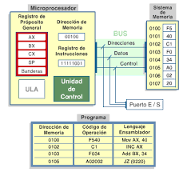
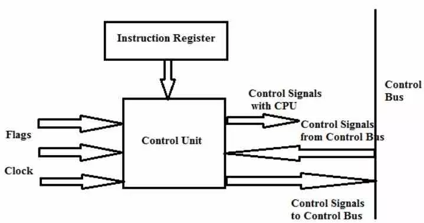

La Unidad de Procesamiento (CPU) controla el funcionamiento del computador y lleva a cabo sus funciones de procesamiento de datos. Frecuentemente se le llama procesador.
Un procesador, incluye tanto registros visibles por el usuario como registros de control/estado. Los registros visibles por el usuario pueden ser de uso general o tener una utilidad especial, mientras que los registros de control y estado se usan para controlar el funcionamiento del procesador, un claro ejemplo es el contador de programa.
Lleva a cabo una gran variedad de:
• Cálculos
• Comparaciones numéricas
• Transferencias de datos como respuesta a las peticiones de los programas que están siendo ejecutados en memoria.
La CPU controla las operaciones básicas del ordenador enviando y recibiendo señales de control, direcciones de memoria y datos de un lugar a otro de la computadora a través de un grupo de canales llamados BUS.
La Unidad Central de Proceso está constituida internamente por:
• La Unidad de Control
• Unidad Aritmético-Lógica
2.2 Estructura de registros
Dentro del procesador hay un conjunto de
registros clasificados en dos tipos:
Registros visibles al programador: permiten
al programador de lenguaje m´aquina o
de ensamblador minimizar las referencias
a memoria principal por medio de la
optimizaci´on de uso de registros
Registros de control y estado: Son utilizados
por la unidad de control para controlar
el funcionamiento del procesador y por
programas privilegiados del sistema operativo
para controlar la ejecuci´on de programas
2.2.2 Registros de control y de estados
Registros de control
Hay diversos registros de la CPU que se pueden emplear para controlar su funcionamiento. La mayoría de éstos, en la mayor parte de las máquinas, no son visibles al usuario. Algunos de ellos pueden ser visibles a instrucciones de máquina ejecutadas en un modo de control o de sistema operativo.
Naturalmente, máquinas diferentes tendrán diferentes organizaciones de registros y usará distinta terminología.
Se enumera aquí una lista razonablemente completa de tipos de registros, con una breve descripción. Son esenciales cuatro registros para la ejecución de una instrucción: el contador de programa, el registro de dirección, el registro de instrucción y el registro de datos.
El contador de programa contiene una dirección de instrucción. Típicamente, la CPU actualiza el PC después de cada captación de instrucción de manera que siempre apunta a la siguiente instrucción a ejecutar. Una instrucción de bifurcación o salto también modificará el contenido de PC.
La instrucción captada se carga en el registro de instrucción, donde son analizados el código de operación y los campos de operando.
Se intercambian datos con la memoria por medio de registro de direcciones y el de datos. En un sistema con organización de bus, el de direcciones se conecta directamente al bus de direcciones, y el de datos directamente al bus de datos.
Los registros visibles al usuario, sucesivamente, intercambian datos con el de datos. Los cuatro registros que acaban de mencionar se usan para la transferencia de datos entre la CPU y la memoria. Dentro de la CPU, los datos tienen que ofrecerse a la ALU para su procesamiento. La ALU puede tener acceso directo al de datos y a los registros visibles al usuario.
Como alternativa, puede haber registros intermedios adicionales en el límite de la ALU; estos registros sirven como registros de entrada y salida de la ALU e intercambian datos con el de datos y los registros visibles al usuario.
Registros de estado
El registro de estado, también conocido como registro de bandera, palabra de estado del programa y registro de código de condición, se define como un conjunto de bits de bandera dentro de un procesador.
Un registro es un circuito procesador y es muy parecido a una ubicación de memoria, lo que significa que los datos podrían escribirse y leerse.
A diferencia de una ubicación de memoria, el registro de estado a menudo no tiene una dirección porque el microprocesador la usa internamente. En una unidad central de procesamiento (CPU) de 8 bits, se puede establecer un bit de registro de estado, igual al número 1, o borrar , igual al número 0, mediante una variedad de resultados de operación del procesador. El procesador a veces establece o borra los bits, pero otras veces, una instrucción de programa particular establece o borra los bits.
Los bits de registro de estado también se denominan banderas o bits de bandera, y el programador los utiliza para ciertos fines de programación.
Cada bandera en un registro de estado tiene un propósito único.
El indicador de acarreo se establece si una operación anterior hizo que el séptimo bit - o indicador negativo - se desbordara, o hiciera que el indicador de transporte se desbordara. Se establece durante los cambios de lógica, comparación y aritmética. El indicador de cero se establece si el resultado de la operación más reciente fue 0.
Un indicador llamado "deshabilitar interrupción" funciona permitiendo o deshabilitando la operación de interrupciones, que son instrucciones que detienen temporalmente ciertas operaciones para que se puedan realizar otras operaciones.
Cuando se establece este indicador en particular, no se permite que funcionen las interrupciones, pero cuando está claro, se permiten las interrupciones. Otra bandera llamada bandera decimal permite al procesador seguir un modo binario más avanzado para realizar ecuaciones aritméticas impecables.
Cuando se establece la bandera, utiliza este modo binario avanzado. Otro bit de registro es el bit de interrupción, que se establece cuando se ejecuta el comando Force Interrupt (BRK).

2.2.3 Ejemplo de registros de CPU reales
2.2.1 Registros visibles para el usuario
Un registro visible al usuario es aquél que puede ser referenciado por medio del lenguaje máquina que ejecuta la CPU. Prácticamente todos los diseños contemporáneos de CPUs están provistos de varios registros visibles al usuario, en oposición a disponer de un único acumulador.
Podemos clasificarlos en:
- Uso General
- Datos
- Direcciones
Códigos de Condición
Los registros de uso general pueden ser asignados por el programador a diversas funciones. A veces, su uso dentro del repertorio de instrucciones es para contener el operando para cualquier código de operación.
Esto proporciona una utilización de registros de auténtico uso general. Con frecuencia, sin embargo, existen restricciones.
Por ejemplo, puede haber registros específicos para operaciones en coma flotante.
En algunos casos los registros de uso general pueden ser utilizados para funciones de direccionamiento. En otros casos hay una separación clara o parcial entre registros de datos y registros de direcciones.
Los registros de datos pueden ser usados únicamente para contener datos y no se pueden emplear en el cálculo de una dirección de operando.
Los registros de dirección pueden ser en sí registros de uso más o menos general, o pueden estar dedicados a un modo de direccionamiento particular.
El caso más conocido es el puntero a pila. La cantidad de registros generales o especializados es una cuestión de diseño.
No hay solución óptima, pero la tendencia parece ir hacia el uso de registros especializados.
Otro problema de diseño es el numero de registros, de uso general o de datos más direcciones, que tienen que incluirse.
A mayor cantidad de registros se requieren mayor cantidad de bits en el campo de operando. Parece óptimo entre 8 y 32 registros.
Menos registros se traducen en más referencias a memoria; más registros no reducen notablemente las referencias a memoria. Por último, está la cuestión de la longitud de los registros.
Los registros que han de contener direcciones han de ser lo suficientemente grandes como para albergar la dirección más grande.
Los registros de datos deben ser capaces de contener valores de la mayoría de tipos de datos.
Algunas máquinas permiten que los registros contiguos sean usados como uno para contener valores de doble longitud.
Una categoría final de registros, que es al menos parcialmente visible al usuario, contiene códigos de condición (también llamados indicadores o flags).
Los códigos de condición son bits fijados por el hardware de la CPU como resultado de alguna operación.
Por ejemplo, una operación aritmética puede producir un resultado positivo, negativo o nulo, o con desbordamiento.
Además de almacenarse el propio resultado en un registro o en la memoria, se obtiene también un código de condición.
Los bits de códigos de condición se reúnen en uno o más registros. Por lo general, forman parte de un registro de control.
Comúnmente, las instrucciones de máquina permiten que estos bits sean leídos por referencia implícita, pero no pueden ser alterados por el programador.
2.3 El ciclo de instrucción
Ciclos de computadora
La búsqueda es el proceso de obtener instrucciones de un programa o un elemento de datos de la memoria.
El término decodificar se refiere al proceso de traducir las instrucciones a señales que la computadora puede ejecutar.
Ejecutar es el proceso de llevar a cabo los comandos. Almacenamiento en este contexto significa escribir el resultado a la memoria.
En algunas computadoras, el procesador busca, decodifica, ejecuta y almacena solo una instrucción a la vez.
En estas computadoras el procesador espera hasta que una instrucción completa las cuatro etapas del ciclo antes de iniciar a trabajar con la siguiente instrucción.
Hoy día la mayoría de las computadoras personales soportan un concepto llamado pipelining:
Con pipelining los procesadores inician la búsqueda de una segunda instrucción antes de que se haya completado el ciclo de la computadora de la primera instrucción. Los procesadores que cuentan con pipelining habilitado son más rápidos en el procesamiento porque no tienen que esperar para que una instrucción complete el ciclo de computadora antes de buscar la siguiente.
2.3.1 Ciclo Fetch-Decode-Execute
Primera etapa del ciclo de instrucción: Fetch
La primera etapa del ciclo de instrucción se encarga de captar las instrucciones
que hay en la memoria RAM asignada al procesador a través de una serie de unidades y
registros que son las siguientes. Es en esa memoria donde se encuentra la información
que la CPU debe procesar por lo que ese primera paso tiene que ver con recolectarla,
con leerla para comenzar las operaciones.
La unidad de control lo que hace es descodificar las instrucciones y esto
lo hace porque cada instrucción en realidad no deja de ser una especie
de oración en donde primero va el verbo y luego el objeto directo u
objeto sobre el que se hace la acción. El sujeto se acaba eliminando en este lenguaje
interno de los ordenadores por el hecho que se sobrentiende que es el propio ordenador el
que lo ejecuta, así pues cada cantidad de bits es una oración donde los primeros 1 y 0 corresponden a la acción y los que vienen a continuación es el dato o la localización del dato que se quiere manipular.

La segunda etapa: Decode
Hay diferentes tipos de instrucciones y no todas hacen lo mismo, por lo que dependiendo del tipo de
instrucción necesitamos saber hacía que unidades de ejecución se van a enviar y la manera más clásica
de hacerlo es a través de lo que llamamos un descodificador, el cual toma cada instrucción, la divide
internamente según el opcode o
instrucción y el dato o la dirección de memoria donde se encuentra este
Tercera etapa: Execute
en esta étapa las instrucciones son resueltas, pero no todos los tipos de instrucción se resuelven de la misma forma, ya que la forma de utilizar el hardware dependerá de la función de cada una de ellas, en general tenemos cuatro tipos de instrucciones:
-Instrucciones de movimiento de bits: En el cual se manipula el orden de los bits que contienen el dato.
-Instrucciones aritméticas: Donde se realizan operaciones matemáticas y también lógicas, estas se solucionan en las llamadas ALU o unidades aritmético-logicas
-Instrucciones de salto: En la que se cambia la siguiente el valor del contador de programa, lo que permite utilizar el código de manera recursiva.
-Instrucciones a memoria: Son con las que el procesador lee y escribe la información de la memoria del sistema.
Una vez la instrucción ha sido terminada se escribe el resultado sobre una dirección de memoria en concreto y se pasa a ejecutar la siguiente, algunas instrucciones no manipulan los valores de memoria sino ciertos registros. Así pues el registro del contador de programa es modificado por las instrucciones de salto, si queremos leer o escribir un dato entonces se manipulan los registros MAR y MDR.
2.3.2 Segmentación de instrucciones
La segmentación (en inglés pipelining, literalmente 'tubería' o 'cañería', o data pipeline) es un método por el cual se consigue aumentar el rendimiento de algunos sistemas electrónicos digitales. Se usa principalmente en los microprocesadores.
El nombre, por analogía, viene de que para impulsar el gas en un oleoducto a la máxima velocidad posible es necesario dividir el oleoducto en tramos y colocar una bomba que dé un
nuevo impulso al gas.
El símil con la programación existe en que los cálculos deben ser registrados o sincronizados con el reloj cada cierto tiempo para que la ruta crítica (tramo con más carga o retardo computacional entre dos registros de reloj) se reduzca.
La ruta crítica es en realidad la frecuencia máxima de trabajo alcanzada por el conjunto. A mayor ruta crítica (tiempo o retraso entre registros) menor es la frecuencia máxima de trabajo y a menor ruta crítica mayor frecuencia de trabajo. La una es la inversa de la otra. Repartir o segmentar equitativamente el cálculo hace que esa frecuencia sea la óptima a costa de más área para el almacenamiento o registro de los datos intervinientes y de un retraso o latencia (en ciclos de reloj/tiempo) en la salida del resultado equivalente al número de segmentaciones o registros realizados.
La ventaja primordial de este sistema es que, tal y como se muestra en la imagen, una vez el canal (pipe) está lleno, es decir, después de una latencia de cuatro en la imagen, los resultados de cada comando vienen uno tras otro cada flanco de reloj y sin latencia extra por estar encadenados dentro del mismo canal.
Todo esto habiendo maximizado la frecuencia máxima de trabajo.
2.3.3 Conjunto de instrucciones caracteristicas y funciones
Un conjunto de instrucciones o repertorio de instrucciones, juego de instrucciones o ISA (del inglés Instruction Set Architecture, Arquitectura del Conjunto de Instrucciones) es una especificación que detalla las instrucciones que una CPU de un ordenador puede entender y ejecutar, o el conjunto de todos los comandos implementados por un diseño particular de una CPU.
El término describe los aspectos del procesador generalmente visibles a un programador, incluyendo los tipos de datos nativos, las instrucciones, los registros, la arquitectura de memoria y las interrupciones, entre otros aspectos.
Existe principalmente de 3 tipos: CISC (Complex Instruction Set Computer), RISC (Reduced Instruction Set Computer) y SISC (Specific Instruction Set Computer).
La arquitectura del conjunto de instrucciones (ISA) se emplea a veces para distinguir este conjunto de características de la microarquitectura, que son los elementos y técnicas que se emplean para implementar el conjunto de instrucciones. Entre estos elementos se encuentras las microinstrucciones y los sistemas de caché.
Procesadores con diferentes diseños internos pueden compartir un conjunto de instrucciones; por ejemplo el Intel Pentium y AMD Athlon implementan versiones casi idénticas del conjunto de instrucciones x86, aunque tienen diseños internos completamente opuestos.
2.3.4 Modos de direccionamiento
Los modos de direccionamiento especifican las reglas que permiten interpretar adecuadamente el
campo de dirección de la instrucción que se está ejecutando en cada momento. Esto es, las
diferentes maneras de componer la dirección que se volcará en el bus de direcciones para apuntar a
un determinado dato.
− Reducción del espacio que en memoria ocupan las instrucciones que
apuntan a la memoria para intercambiar datos con ella.
− Capacidad para reubicar código. Ya que permiten realizar
direccionamientos relativos a una determinada posición.
− Facilidad para manejar estructuras de datos.
2.4 Casos de estudio de CPU reales
En informática, los modos de direccionamiento son las diferentes maneras de especificar un operando dentro de una instrucción en lenguaje ensamblador.
Un modo de direccionamiento especifica la forma de calcular la dirección de memoria efectiva de un operando mediante el uso de la información contenida en registros y/o constantes, contenida dentro de una instrucción de la máquina o en otra parte.
No existe una forma generalmente aceptada de nombrar a los distintos modos de direccionamiento. En particular, los distintos autores y fabricantes de equipos pueden dar nombres diferentes para el modo de hacer frente al mismo, o los mismos nombres, a los diferentes modos de direccionamiento.
Además, un modo de direccionamiento que en una determinada arquitectura se trata como un modo de direccionamiento, puede representar la funcionalidad que en otra arquitectura está cubierto por dos o más modos de direccionamiento.